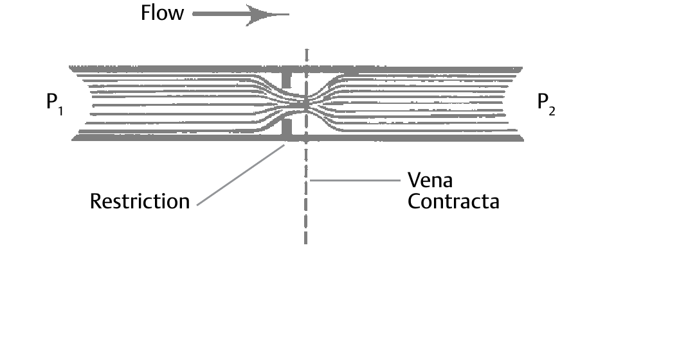

Choked Liquid Flow — Vaporization, Not Friction

- 1Choked flow in a liquid is vaporization, not a friction ceiling — once static pressure inside the valve drops below the liquid’s own vapor pressure, it flashes at the vena contracta and added ΔP stops buying more flow
- 2The check: calculate ΔPmax — ΔPmax(L) = FL²·(P1−FF·Pv) with no fittings, or the Fp/FLP-corrected form with fittings — and compare it to the actual service ΔP
- 3Whichever of ΔPmax and the actual ΔP is smaller goes into the Cv equation; if ΔPmax is the smaller value, the flow is choked
- 4Once choked, the outlet pressure tells you which failure mode: below the liquid’s vapor pressure — flashing; above it — cavitation, the collapse happens downstream instead
After Fisher Control Valve Sourcebook — Oil & Gas, Chapter 3, “Liquid Valve Sizing,” printed pp. 3-4–3-6.